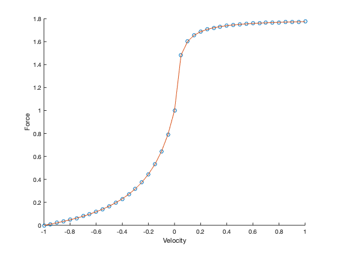
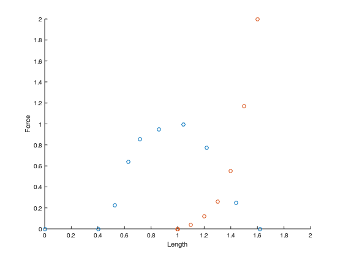
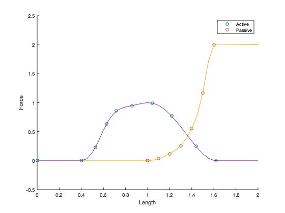
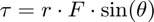
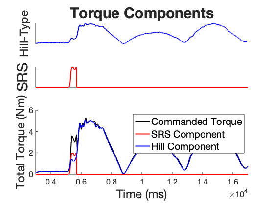

Sample Trial Processing
Contents
Column Numbers
Set the column numbers of relevant variables so that the appropriate vectors can be extracted from the data file
Frame = 10; %We use the frame number to track time. 1000 frames are recorded per second %Force Sensors FS_X = 20; FS_Y = 21; %ACH = Analog Channel. These are added in the build file and are not %default kinarm outputs len_ACH = 49; % muscle length vel_ach = 50; %velocity activation = 51; %activation torque_analog = 52; SRS_gain = 53; %Coordinates of hand/spring end, velocity of the handle Hand_PositionX = 54; Hand_PositionY = 55; speed = 56; vel_x = 57; vel_y = 58; acc = 59; acc_X = 60; acc_Y = 61; Cmd_X = 62; Cmd_Y = 63; Cmd = 64;
Data Loading
Load the Hill Model Data, and Interpolate the curves to create continuous functions for smooth lookup
load("force_curves.mat");
Force Velocity Curve
f = fvCurve(:,2); v = fvCurve(:,1); fv_int = spline(v, f); figure(1) scatter(v,f) xlabel("Velocity") ylabel("Force") hold on xx = -1:0.05:1; plot(xx, ppval(xx,fv_int));
Force Length Active and Passive
fa = flaCurve(:,2); la = flaCurve(:,1); fa_int = spline(la, fa); fp = flpCurve(:,2); lp = flpCurve(:,1); fp_norm = fp ./max(fp); %normalize y values fp_int = spline(lp, fp); f_tot = ppval(fp_int, lp) + ppval(fa_int, lp); ft_int = spline(lp, f_tot); figure(2) scatter(la, fa) xlabel("Length") ylabel("Force") hold on scatter(lp, fp) xlim([0, 2.0])
xx = 0:0.05:2.0; plot(xx, ppval(xx, fp_int)) hold on plot(xx, ppval(xx, fa_int)) hold off legend(["Active", "Passive"])
Load the trial we want to examine
trial = readmatrix("Torque Trials/SRS_9.csv", 'Range', 273);
Parameter definitions
These can be extracted from the file, but here I have just hard coded the values
% *Define the relevant coordinates and lengths of the simulation* % % <<display_snap.png>> % origin = [0,0.52]; % global y coordinate of the shoulder of the limb d = 0.08; %insertion point of muscle in forearm, measured as proportion of forearm total length L1 = 0.29; L2 = 0.2; %L1 = length of upper arm % L2 = length of forearm (rotating shank) elbow_pos= [0, (origin(2) - L1)]; %position of joint based on limb definitions L1_vec = origin - elbow_pos; %vector of upper arm muscle_act = trial(:,activation); %activation level of the muscle hand_pos = [trial(:,Hand_PositionX) trial(:,Hand_PositionY)]; %position of the hand in 2D space hand_force = [trial(:, Cmd_X) trial(:, Cmd_Y)]; %force commanded by KinArm at the hand hand_FS = [trial(:,FS_X), trial(:,FS_Y)]; % force measured by force sensors at the hand L2_vec = hand_pos - elbow_pos; %vector from joint to hand insertion_offset = (d/L2) * L2_vec; % length of insertion point along forearm insertion_vec = insertion_offset - elbow_pos; %vector from elbow to insertion point insertion_pos = elbow_pos + insertion_offset; %coordinate position of muscle insertion muscle_vec = origin - insertion_pos; % vector of muscle from origin to insertion point muscle_len = zeros(length(insertion_vec), 1); %length of the muscle theta = zeros(length(insertion_vec), 1); % empty n*1 vector for later beta = zeros(length(insertion_vec), 1); thetatorqued = zeros(length(insertion_vec),1); costheta = zeros(length(insertion_vec),1); thetatorque = zeros(length(insertion_vec), 1); joint_ang = zeros(length(insertion_vec), 1); orth_ang = zeros(length(insertion_vec), 1); x1 = 1; y1 = 0; %vector defining the x axis
for i = 1:length(insertion_vec)
theta(i) = subspace(L2_vec(i,:)', insertion_vec(i,:)'); %angle b/w forearm and muscle muscle_len(i) = sqrt(sum(muscle_vec(i,:).^2)); %instantaneous muscle length beta(i) = subspace(L2_vec(i,:)', hand_force(i,:)'); %angle b/w force at the hand and the forearm %this angle helps us do inverse kinematics to calculate the torque at the hand! x2 = L2_vec(i,1); y2 = L2_vec(i,2); joint_ang(i) = atan2(x1*y2 - y1*x2, x1*x2 + y1*y2); orth_ang(i) = joint_ang(i) - (pi/2);
Calculate the norm of the cross product between the muscle and the forearm vectors, and the dot product between the muscle and forearm and take the arctangent
u = [muscle_vec(i,:), 0];
v1 = [L2_vec(i,:), 0];
thetatorqued(i) = atan2d(norm(cross(u,v1)), dot(u,v1));
costheta(i) = max(min(dot(u,v1)/norm(u)*norm(v1),1),-1);
thetatorque(i) = real(acos(costheta(i)));
end
Using the Forces at the hand and the angles between the joints and the muscle, calculate the torque produced by the muscle
orth_v = [cos(orth_ang) sin(orth_ang)]; joint_angd = rad2deg(joint_ang); orth_angd = rad2deg(orth_ang); thetad = rad2deg(theta); betad = rad2deg(beta); velocity = [trial(:, vel_x), trial(:, vel_y)]; %x and y velocities hand_speed = trial(:,speed); Fs = 1000; % Frame rate is 1000 frames per second speed_raw = [0;diff(muscle_len)*Fs]; N3 = 2; %Order lb = 10/(0.5*Fs); % Lower cutoff frquency [b2,a2] = butter(N3,lb,'low'); speed_filt = filtfilt(b2, a2, speed_raw); %filter the speed data vel_norm = speed_filt / l0; %resting lengths per second Vmax = 5; Vmax_m = Vmax * l0; %convert to m/s speed_muscle = vel_norm/Vmax; %convert to V/Vmax len_r = muscle_len./l0; t_0 = 15.0; %resting tension in newtons pred_force = zeros(length(trial), 1);FV = zeros(length(trial), 1); FLA = zeros(length(trial), 1);FLP = zeros(length(trial), 1); Flen = zeros(length(trial), 1); normC = zeros(length(trial), 1); normFS = zeros(length(trial), 1); C = zeros(length(trial), 2); FS = sqrt(trial(:, FS_X).^2 + trial(:, FS_Y).^2); F = sqrt(trial(:, Cmd_X).^2 + trial(:, Cmd_Y).^2); reflex_gain = 2.5; reflex_component = zeros(length(trial),1);
Calculate orthogonal force at hand

Given the force at the hand, we calculate the component that is perpindicular to the forearm (L2 shank) which gives us $ F \sin(\theta)$
The radius is the length of the forearm (L2)
for i = 1:length(trial) FV(i) = ppval(fv_int, speed_muscle(i)); FLA(i) = max(0, ppval(fa_int, len_r(i))); FLP(i) = ppval(fp_int, len_r(i)); %Flen(i) = FLA(i) + FLP(i); pred_force(i) = ((0.5 * FV(i) * FLA(i)) + FLP(i)) * t_0; A = hand_force(i,:); %hand forces A2 = hand_FS(i,:); B = orth_v(i,:); C(i,:) = (dot(A,B)/norm(B)^2)*B; C2(i,:) = (dot(A2,B)/norm(B)^2) *B; normC(i) = norm(C(i,:)); %orthogonal force at hand, i.e. F*sin(theta) normFS(i) = norm(C2(i,:)); end % Filter the signal N3 = 4; lb = 5/(0.5*Fs); % Lower cutoff frquency [b2,a2] = butter(N3,lb,'low'); torq_cmd = L2 .* normC; torq_FS = L2 .* normFS; torq_hill = d .* pred_force .* sind(thetatorqued); SRS = trial(:,SRS_gain); %force from SRS SRS_torque = d .* SRS .* sind(thetatorqued); residuals = torq_FS - torq_cmd; mdl = fitlm(torq_cmd, torq_FS); mdl_pred = fitlm(torq_hill * 6 + SRS_torque, torq_cmd); mse_pred = mdl_pred.MSE; mse_val = mdl.MSE; range = [3000, 17000];
PLOTS
figure(3); maxtiles = 5; t = tiledlayout('flow'); nexttile([1, maxtiles]) %FIRST ONE plot(trial(:, Frame), torq_hill*6,'LineWidth', 2.0,'color', 'b') ax1 = gca(); ax1.XAxis.FontSize = 16; ax1.YAxis.FontSize = 16; hFig = gcf; color = get(hFig, 'Color'); set(ax1,'XColor', 'none', 'TickDir', 'out'); ylabel("Hill-Type", 'FontSize', 24) %legend(["Commanded Torque","Measured Torque"], 'fontsize', 24); set(ax1, 'TickDir', 'out') xlim(range) yticks([]) box off nexttile([1, maxtiles]) plot(trial(:,Frame), SRS_torque* 6, 'LineWidth', 2, 'color', 'r') xlim(range) ax3 = gca(); ax3.XAxis.FontSize = 16; ax3.YAxis.FontSize = 16; set(ax3, 'TickDir', 'out') ylabel("SRS", 'FontSize', 30) yticks([]) xticks([]) box off % plot(trial(:,Frame), SRS_torque, 'LineWidth', 2, 'color', [0.5 1 0.1]) nexttile([2, maxtiles]) plot(trial(:,Frame), torq_cmd, 'LineWidth', 2, 'color', 'k'); % hold on % plot(trial(:,Frame), torq_FS, 'LineWidth', 2, 'color', [0.2, 0.0, 0 0.8]); ax = gca(3); ax.XAxis.FontSize = 16; ax.YAxis.FontSize = 16; ylabel("Total Torque (Nm)", 'FontSize', 24) xlabel("Time (ms)",'FontSize', 24) xlim(range) hold on plot(trial(:,Frame), SRS_torque*6, 'color', 'r', 'LineWidth', 2) hold on plot(trial(:,Frame), torq_hill*6, 'color', 'b', 'LineWidth', 2) box off l = legend(["Commanded Torque", "SRS Component", "Hill Component"]); l.FontSize = 20; title(t, "Torque Components", 'FontSize', 30, 'FontWeight', 'bold')